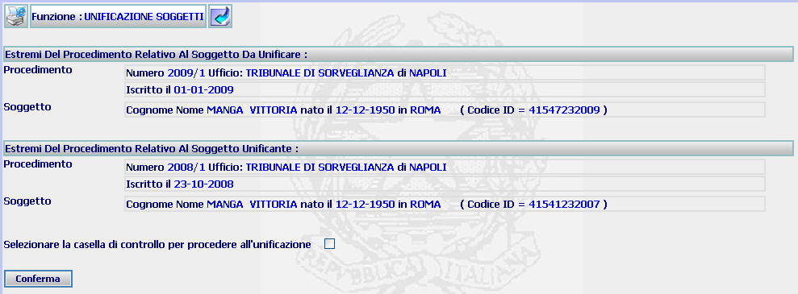
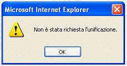
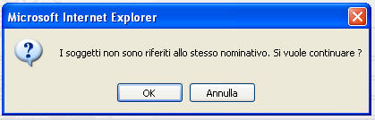

UNIFICAZIONE SOGGETTI: La funzione consente di visualizzare il dettaglio dei procedimenti relativi ai soggetti da unificare e di procedere al controllo circa la corrispondenza delle due anagrafiche.
LE MASCHERE VIDEO
La funzione viene realizzata attraverso la maschera seguente nella quale è possibile visualizzare il dettaglio dei procedimenti relativi ai soggetti da unificare e di procedere al controllo circa la corrispondenza delle due anagrafiche.

COME FARE PER ...
Per procedere alla unificazione dei due soggetti l'utente deve:
2.
selezionare il bottone

PULSANTI
Sono presenti i pulsanti
 e
e
 facenti parte del gruppo di
pulsanti di "Uso Comune"
facenti parte del gruppo di
pulsanti di "Uso Comune"
BOTTONI
Oltre ai comandi funzionali relativi al menù verticale è presente il seguente bottone:
|
COMANDI |
DESCRIZIONE |
|
|
A fronte di tale comando, il sistema dopo aver verificato la validità dei dati specificati, presenta la maschera di elenco procedimenti per soggetto. |
CONTROLLI
Il sistema effettua i seguenti controlli:
|
verifica che sia stato selezionato il check button , fornendo in caso contrario il seguente messaggio |

| verifica che i soggetti relativi ai due procedimenti selezionati siano riferiti allo stesso nominativo, fornendo in caso contrario il seguente messaggio |
